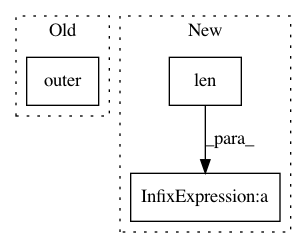

7b48b0899970079383ae52ffcd60e1320c60c571,paysage/models/hidden.py,RestrictedBoltzmannMachine,derivatives,#RestrictedBoltzmannMachine#Any#,186
Before Change
else:
derivs["visible_bias"] = -visible
derivs["hidden_bias"] = -mean_hidden
derivs["weights"] = -numpy.outer(visible, mean_hidden)
return derivs
//TODO:
After Change
if len(mean_hidden.shape) == 2:
derivs["visible_bias"] = -B.mean(visible, axis=0)
derivs["hidden_bias"] = -B.mean(mean_hidden, axis=0)
derivs["weights"] = -B.dot(visible.T, mean_hidden) / len(visible)
else:
derivs["visible_bias"] = -visible
derivs["hidden_bias"] = -mean_hidden
derivs["weights"] = -B.outer(visible, mean_hidden)
In pattern: SUPERPATTERN
Frequency: 3
Non-data size: 3
Instances
Project Name: drckf/paysage
Commit Name: 7b48b0899970079383ae52ffcd60e1320c60c571
Time: 2016-12-21
Author: charlesfisher@Charless-MacBook-Pro.local
File Name: paysage/models/hidden.py
Class Name: RestrictedBoltzmannMachine
Method Name: derivatives
Project Name: Qiskit/qiskit-aqua
Commit Name: 9cb688f2063355320b770f6e0b4bd79c0422725a
Time: 2018-06-29
Author: imamichi@jp.ibm.com
File Name: qiskit_acqua/ising/tsp.py
Class Name:
Method Name: tsp_value
Project Name: ysig/GraKeL
Commit Name: 22174935d2771cca41cf10dc75bfccf9169451a6
Time: 2018-03-01
Author: y.siglidis@gmail.com
File Name: grakel/kernels/neighborhood_subgraph_pairwise_distance.py
Class Name: neighborhood_subgraph_pairwise_distance
Method Name: fit_transform